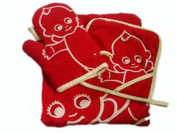
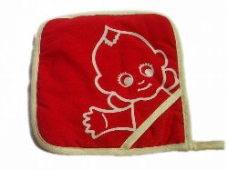
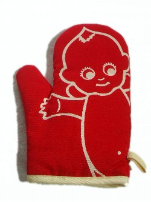

なないろまーぶる collection ・サトちゃん ・ピョンちゃん ・コルゲンのカエル ・オリエンタル坊や ・その他薬局キャラクター ・その他企業キャラクター ・ストラップ 時にはtrip,時にはtravel blog bbs link profile top |
  キユーピーマヨネーズの懸賞で当たった、鍋敷き・ミトン・エプロンの3点セット。   Copyright(c) 2008 ふるいかめら |
|
なないろまーぶる collection ・サトちゃん ・ピョンちゃん ・コルゲンのカエル ・オリエンタル坊や ・その他薬局キャラクター ・その他企業キャラクター ・ストラップ 時にはtrip,時にはtravel blog bbs link profile top |
 キユーピーマヨネーズの懸賞で当たった、鍋敷き・ミトン・エプロンの3点セット。   Copyright(c) 2008 ふるいかめら |